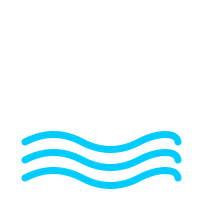
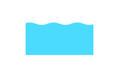

Chennai has 93 emergency boat stations. But only 15 sit on the flooded network and within reach of a safe zone. These are the candidates for a permanent dual mobility system.
21 stations reach the water but not the safe zones. 57 never flood, present in the city, absent from the crisis.

Waterway network
Canal integrationMethod — Stations evaluated against two conditions: proximity to flooded segments (≤50 m) and distance to safe zones (≤500 m). Assessed across four space syntax metrics. Waterway network: flood-impacted street segments combined with Chennai's canal network, hand-mapped from satellite imagery and IWRS hydrological data.